| 0:00–0:15 | Gancho em 3D Chute, voo com rastros musicais, título. Termina de lado para virar 2D sem corte. |
| 0:15–0:44 | A regra do jogo Rebobina, desliga o ar, o peso é a única força: aceleração só para baixo. |
| 0:44–1:09 | Quebrar a velocidade Triângulo de v₀, cosseno e seno derivados, 12 m/s e 16 m/s. Voo com sombras nos eixos. |
| 1:09–2:00 | Os dois movimentos MRU com marcas a cada 12 m. MUV pelo gráfico v × t e sua área. Elimina o t: parábola. |
| 2:00–3:38 | As três perguntas Tempo de subida e total, o topo “não para”, altura por Torricelli (12,8 m), alcance até a fórmula herói (38,4 m). |
| 3:38–4:37 | Dois segredos e fechamento 45° dá o alcance máximo; 30° e 60° caem juntos; replay 3D, resumo e chute final. |
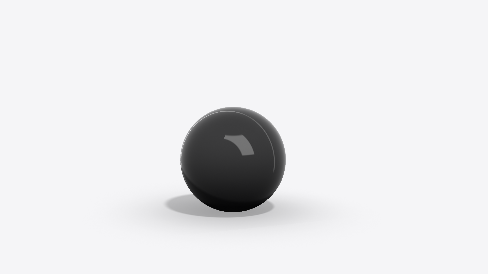
Bola de cetim preta em 3D (GLSL), num estúdio de papel infinito. O chute abre o vídeo.
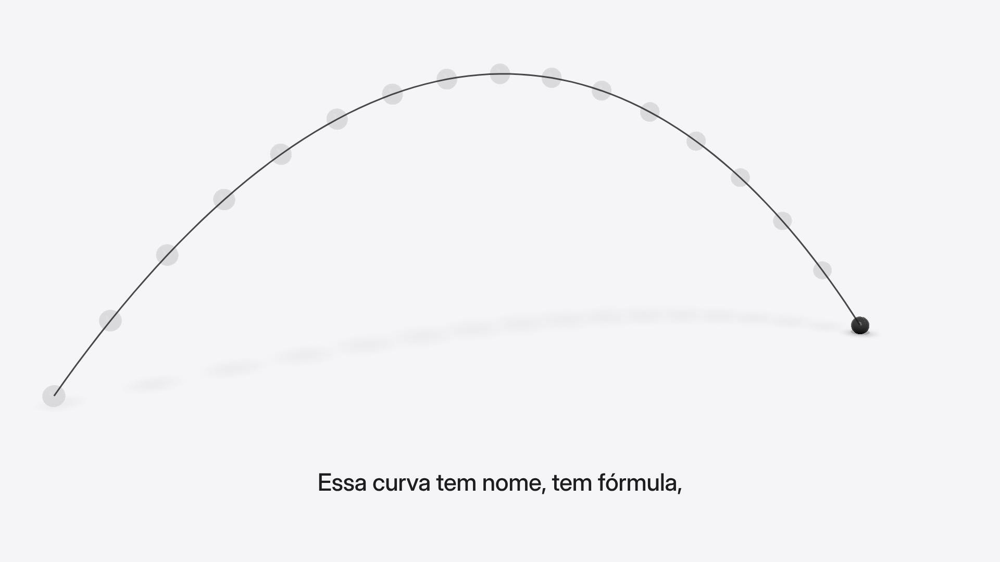
A câmera abre e a bola deixa fantasmas no caminho. Cada fantasma toca uma nota que sobe e desce com a altura: a parábola vira melodia.
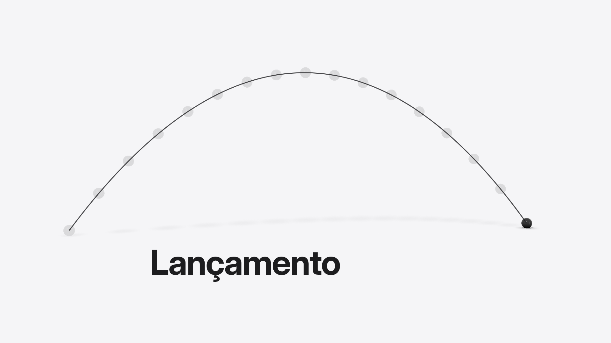
Entra o título. A câmera 3D termina exatamente de lado, e o palco 2D assume sem corte.
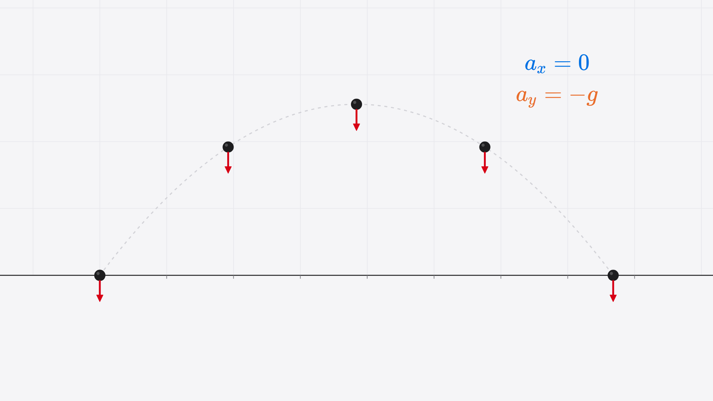
Rebobina a bola, desliga o vento e mostra o peso igual em todos os pontos: ax = 0, ay = −g.
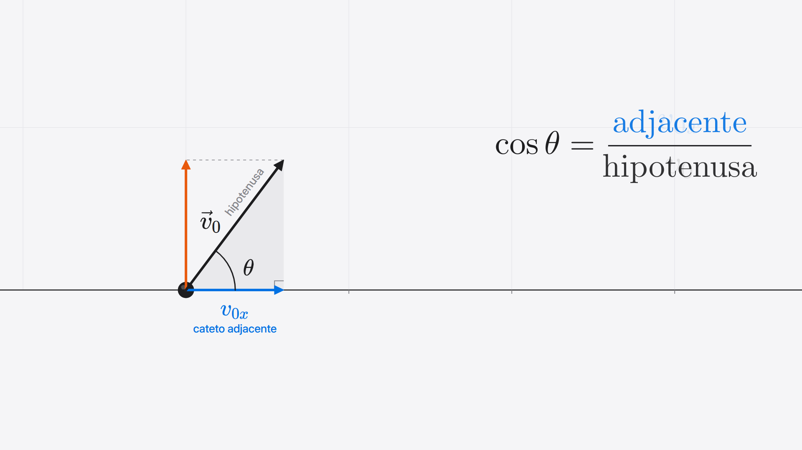
O vetor v₀ vira triângulo. O Manim deriva cos θ = adjacente / hipotenusa até v₀ₓ = v₀ cos θ = 12 m/s (e v₀ᵧ = 16 m/s).
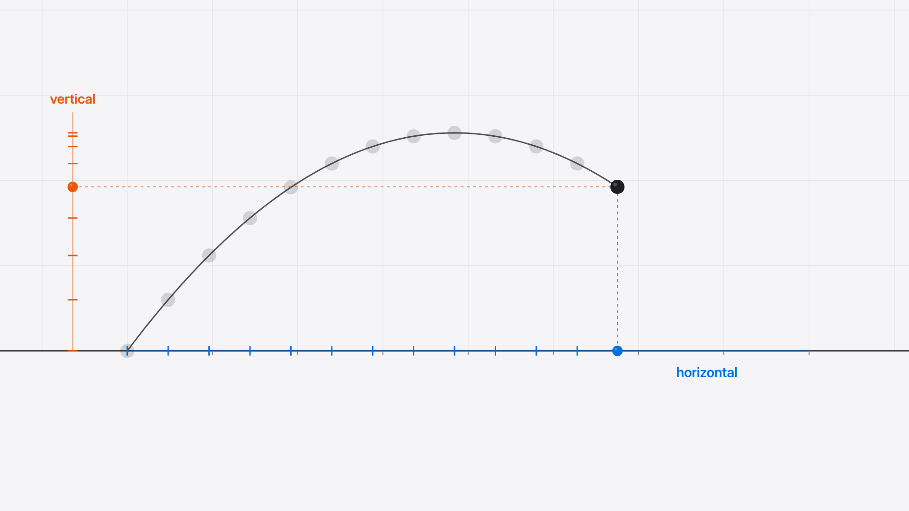
Voo com sombras nos dois eixos: a horizontal anda em passos iguais, a vertical sobe, freia e volta.
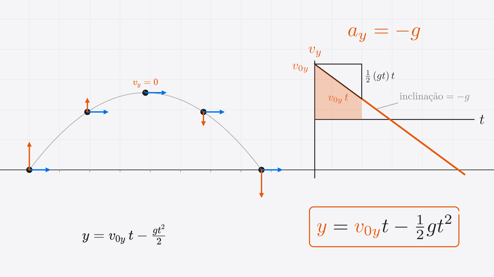
Enquanto a voz fala a fórmula, a tela prova de onde ela vem: no gráfico v × t, a área (retângulo menos triângulo) vira y = v₀ᵧt − ½gt².
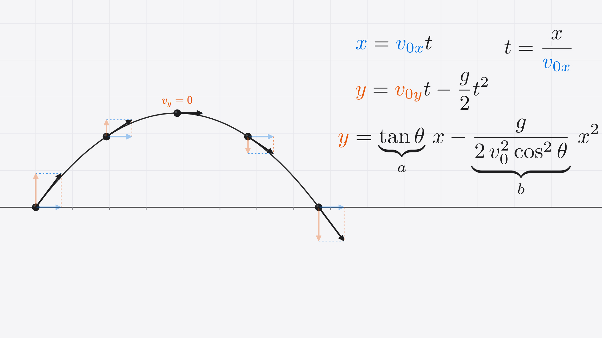
Elimina o t: t = x / v₀ₓ e chega em y = a·x − b·x². A trajetória é uma parábola, provado na tela.
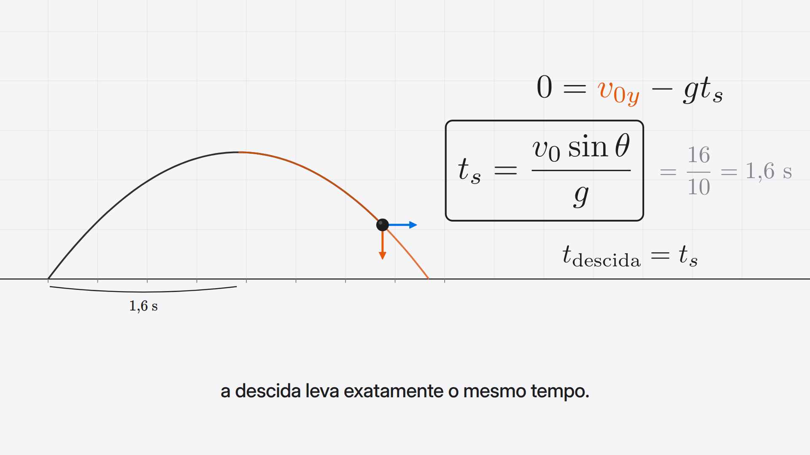
Tempo de subida ts = v₀ sin θ / g = 1,6 s. A curva se dobra no topo (simetria) e dá T = 3,2 s.
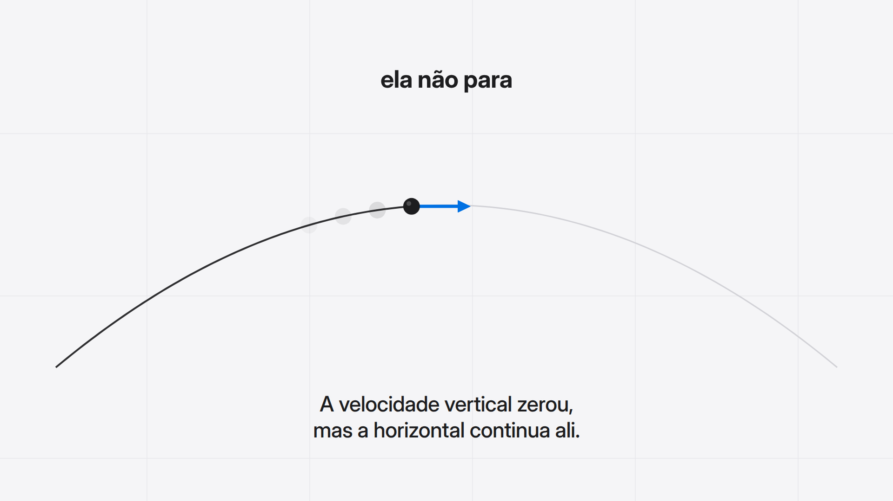
Zoom no topo: a seta vertical some, a horizontal fica. “Ela não para.”
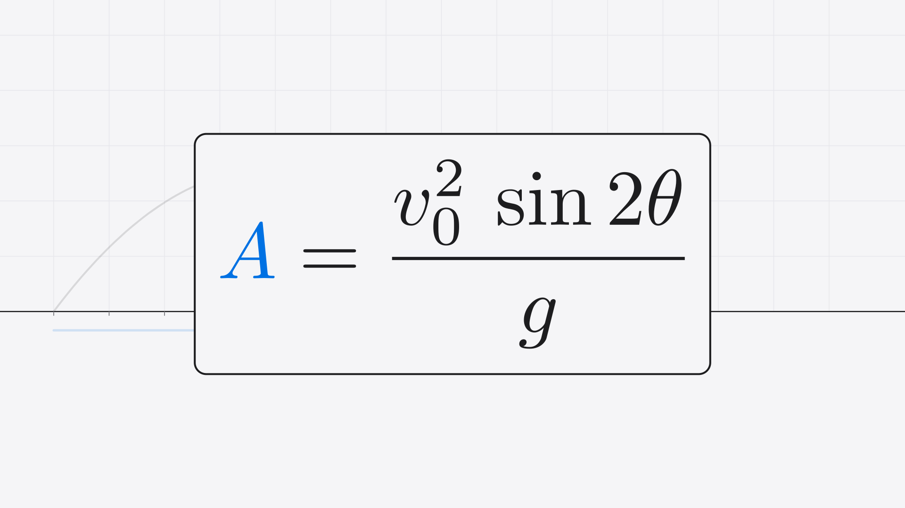
A = v₀² sin 2θ / g no centro, grande; o resto escurece. Antes disso a tela monta A = v₀ₓ · T e a identidade 2 sin θ cos θ = sin 2θ.
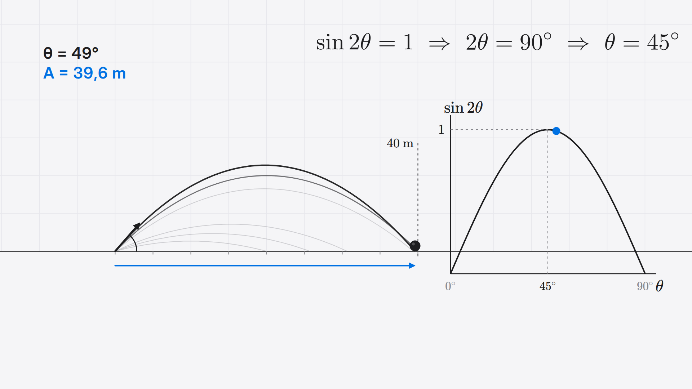
Varre o ângulo: leque de trajetórias e o gráfico de sin 2θ ao vivo. O máximo cai em 45° (40 m).
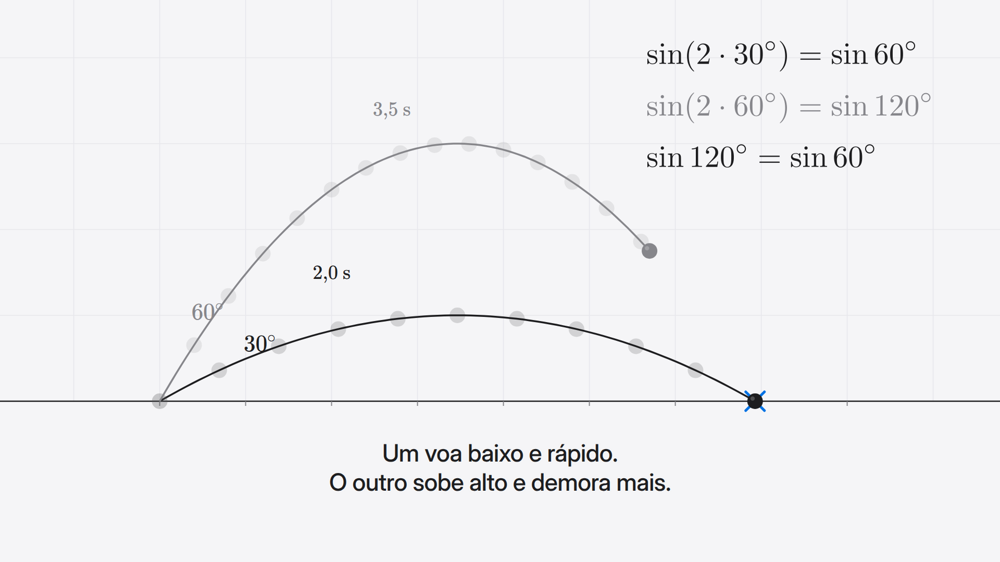
30° (2,0 s) e 60° (3,5 s) caem no mesmo X, a 34,6 m, porque sin 120° = sin 60°.
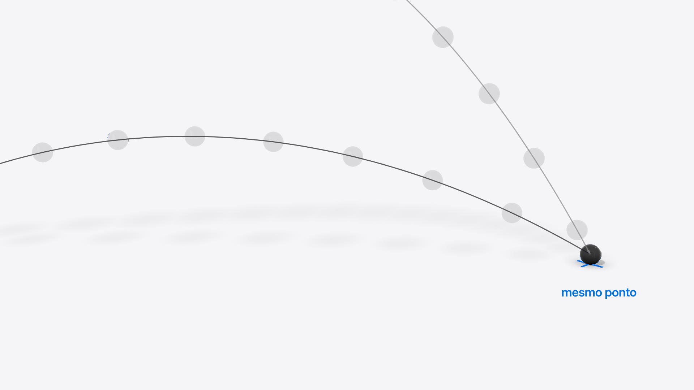
Replay em 3D: os dois rastros congelados e a câmera orbitando até o “mesmo ponto”.
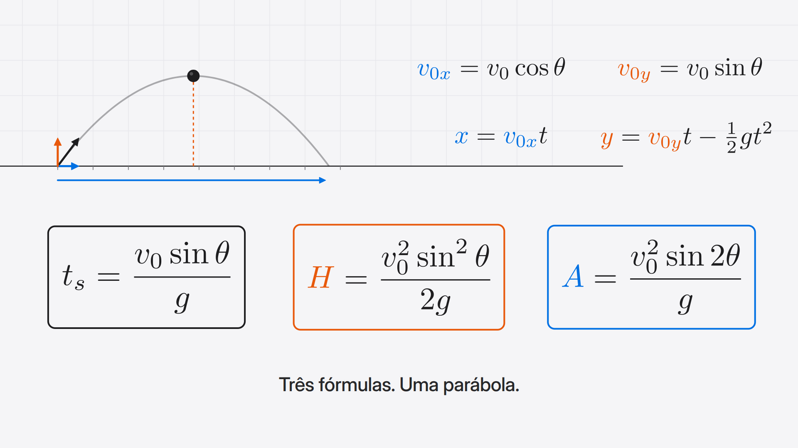
Resumo: as equações base em cima e as três fórmulas em cartões.
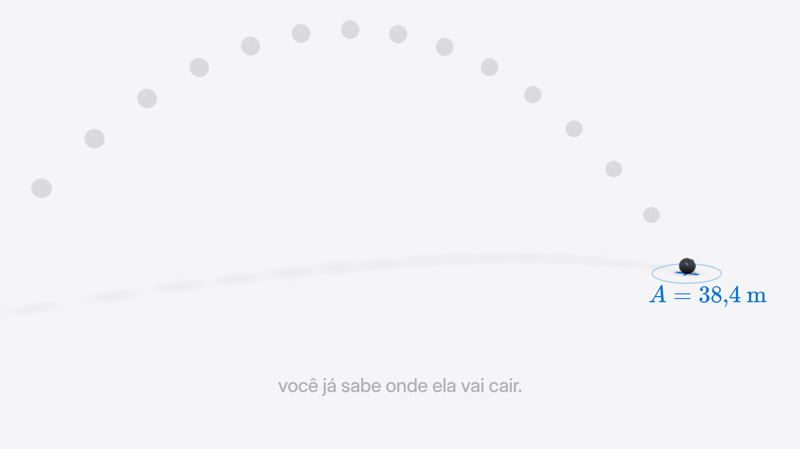
Chute final em 3D. O X marca A = 38,4 m antes da bola chegar.